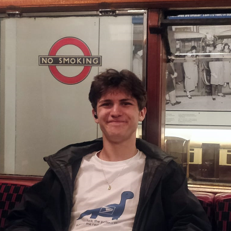

It’s only fair to give a little background on who I am and don’t worry I’ll try to break this up into sections. If you want to jump to specifics click here.
Some Personal Things
My name is Tin Skoric. I was born in New York City, spent some time in Canada and some more time in Vermont. I am renowned for my ability to talk and sometimes I talk about important things.
What I Do
I am a student at the University of Vermont studying economics as an undergraduate at the Honors College. I love the field, and I remain glued to it even outside of my normal coursework, so I hope some of that sentiment makes its way through this website. Beyond that, whenever I get interested in something new, I like to tie that thing into my broader interests, so there probably will be a handful of smaller projects that are less related to my studies. To see any project I am working on just check the projects tab. Some things may be longer format and more formal, others less so, but they will certainly all be on the projects tab.